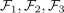
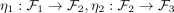
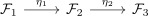
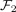

exact sequence of sheaves
1. Definition
Let  be a topological space,
be a topological space,

be sheafs and
be morphism of sheaves. Then
is said to be exact at

, ifsee:
Let be a topological space,

be sheafs and
be morphism of sheaves. Then
is said to be exact at

, ifsee: